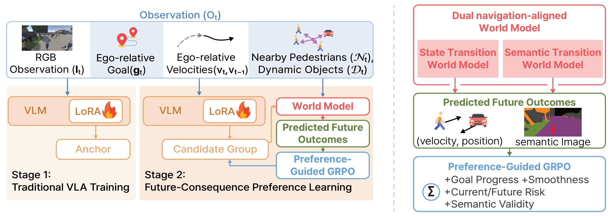
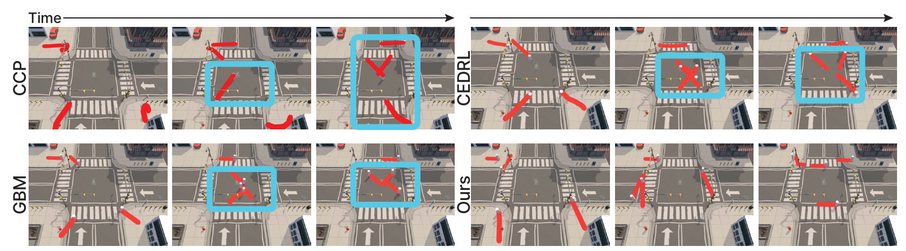
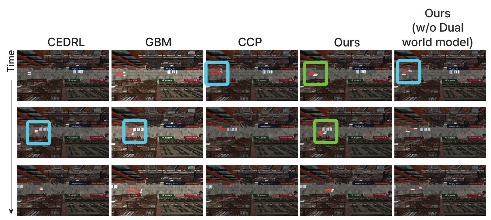
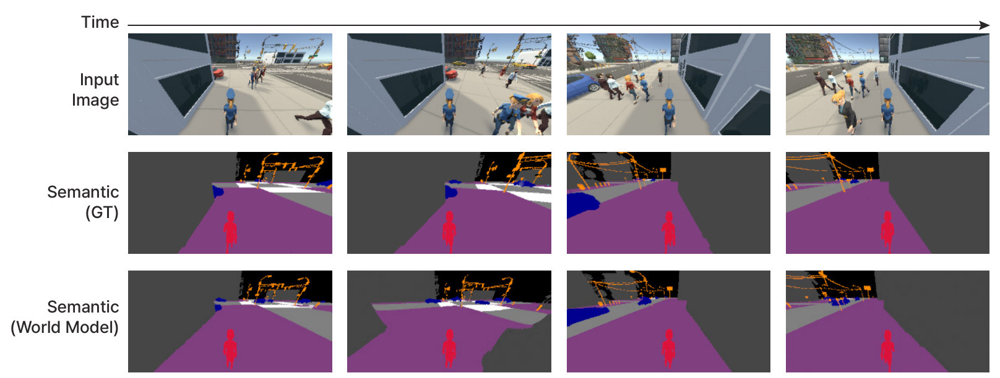

Look ahead during training, act instantly at deployment.
World models are used only as a training-time preference oracle. Their foresight is distilled into the policy, so at deployment the agent picks its next motion in a single forward pass — no rollouts, no scoring.
Abstract
Selecting a next motion in a populated scene is not just a matter of avoiding what is currently in the way: an action can be locally feasible yet drift onto the road instead of the crosswalk, cut into a stream of crossing pedestrians, or bottleneck a narrow passage. These failure modes are invisible from the current state alone, and acting on them requires reasoning about what each candidate action will cause. World models offer exactly this, namely action-conditioned predictions of the future, but rolling them out at every decision step is a cost deployable navigation systems cannot pay, and the field has largely traded foresight for speed.
We argue this is a false dichotomy. The natural place for a world model in human-aware navigation is at training time, as a preference oracle that distills foresight into a fast policy, rather than at inference time, as an online planner. We pair a discrete visual action prior with two task-aligned world models, one for nearby social dynamics and one for future scene semantics, that score candidate actions by their predicted consequences and refine the policy through group-relative preference distillation. At deployment, both world models are removed and the policy acts in a single forward pass.
Across five held-out scenes, this yields navigation that is simultaneously safer, more socially and group-coherent, and more goal-directed than strong reactive and learned baselines, with naive observers rating the resulting motion as more human-like. Taken together, our findings point to a different approach for bringing world-model foresight into deployable agents: not accelerating rollouts, but amortizing them into the policy so that the cost of looking ahead is confined to training.
Video
2 min 9 s · narrated, with English subtitles
A world model that teaches, then steps aside
Training runs in two stages. Stage 1 adapts a pretrained VLM into a policy that imitates human motion over a discrete vocabulary of motion anchors. Stage 2 refines it with two navigation-aligned world models that score each candidate anchor by its predicted social and semantic consequences. Only the refined policy is deployed.

-
01 · ACTION PRIOR
Motion anchors from real walking
Demonstrations are cut into 0.8 s clips and clustered into a vocabulary of K = 100 motion anchors. Choosing an action becomes classification over behaviorally plausible motions: at each step the policy picks an anchor, executes it, and picks again.
- Qwen3-VL-2B + LoRA
- Anchor classification
-
02 · SOCIAL FORESIGHT
State Transition World Model
Given a candidate anchor, predicts where nearby people and vehicles move next — their relative position and velocity. An explicit direction term captures who is heading toward whom, which is what makes it useful for ranking interaction risk.
- 0.18 m position ADE
- 20.8° heading error
-
03 · LAYOUT FORESIGHT
Semantic Transition World Model
Predicts a future semantic map — sidewalk, crosswalk, road, vehicle, building, obstacle — rather than photorealistic frames. Pedestrians are removed from the target, so it learns the layout alone while the state model owns who moves where.
- EDM-style denoiser
- 87.0% mIoU
-
04 · PREFERENCE DISTILLATION
Preference-guided GRPO
For each observation, 10 candidates (the policy’s top 5 plus 5 random) are scored by their predicted outcome. GRPO shifts the policy toward candidates above the group mean.
r = G − C − Pcur − Pfut + M- G
- goal progress
- C
- smoothness cost
- Pcur
- immediate interaction risk
- Pfut
- future risk, from the state model
- M
- semantic validity, from the semantic model
-
05 · DEPLOYMENT
One forward pass
At deployment there are no world models, no candidate groups and no scoring. The look-ahead is amortized into the policy’s weights, so inference cost is independent of the world models’ size, denoising depth or rollout horizon.
- 65 ms per decision
- Single RTX 6000 Ada
Safer, more compliant and more goal-directed — at once
We reconstruct the ETH/UCY pedestrian datasets as Unity scenes and compare against three navigation baselines spanning the major paradigms: GBM (vision-based gradient steering), CCP (configurable RL crowd profiles) and CEDRL (example-driven deep RL). Every result is averaged over three runs.

Closed-loop navigation on five held-out scenarios
Lower violations do not come from conservatism: goal success is higher than the strongest baseline on every scene. Hover a scene to see all four methods.
- Ours
- Best baseline (named)
Full table (all methods, all metrics)
Qualitative comparisons
Red curves trace each agent over the previous 60 frames; boxes mark failure modes.




The two world models catch different mistakes
Neither branch dominates everywhere. They trade off along the social-vs-layout axis we deliberately decomposed future prediction into.
Crossing flows are governed by who is heading toward whom. Dropping the semantic model costs less (66.7).
Narrow passages punish invalid footprints more than mispredicted neighbors. Dropping the state model costs less (8.7).
Ablations by scene
Best per column in bold. Removing both world models is the largest drop everywhere.
What the semantic world model sees
Both predictors are accurate on held-out data, so the preferences guiding GRPO rest on reliable predictions: 87.0% mIoU and 99.3% pixel accuracy for the semantic branch; 0.18 m position ADE and 20.8° heading error for the state branch.

Judged more human-like
20 naive participants rated 40 anonymized rollouts on 7-point Likert scales. Ours scores highest on every criterion; it also produces the lowest ADE against held-out human trajectories.
User study
Mean ± standard error. Significance vs. ours (Holm-corrected Wilcoxon).
Motion fidelity
Displacement error to held-out human trajectories (m), ± 95% CI. Lower is better.
Foresight costs nothing at inference
World-model scoring only happens while training. The deployed policy never waits for it.
Limitations
- Short-horizon prediction. One anchor-conditioned step may miss behavior that unfolds over several seconds, such as delayed yielding or group reformation.
- Fixed vocabulary. With K = 100 anchors, rare or abrupt motions are approximated imperfectly.
- Rule-based semantic scoring. New environments may need their class mapping or validity rules adjusted.
- Simulation only. Experiments run in reconstructed Unity scenes; real-world deployment is future work.
BibTeX
@inproceedings{hong2026seeing,
title = {Seeing Beyond the Next Step: World-Model-Guided
Human-Like Navigation in Multi-Agent Scenes},
author = {Hong, Seong-Eun and Hwang, JuYeong and Kim, Jinhyun
and Jang, Hanyoung and Kang, HyeongYeop},
booktitle = {Advances in Neural Information Processing Systems},
year = {2026}
}